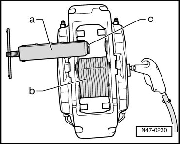
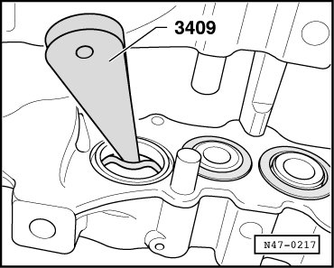
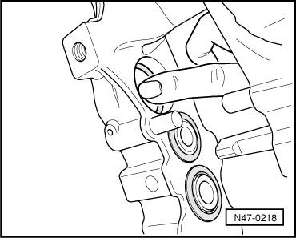
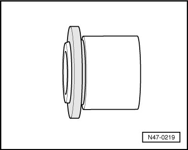
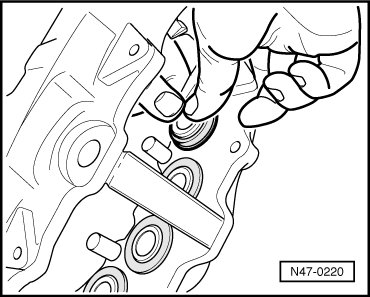

Front Brakes
Brake Caliper Piston
Removal and installation of pistons is identical on the various brake calipers.
Special tools, testers and auxiliary items required
• Trim removal wedge (3409)
• Piston resetting tool (T10145)
Removing
- Force pistons out individually of brake caliper housing using compressed air.

Only one piston can be pressed out at a time. When doing this, hold the opposing piston in the caliper housing using the piston resetting tool - a -. Block the other pistons, e.g. using wood blocks - b -. In addition, place a wooden board - c - in front of the piston resetting tool so that the piston will not be damaged when pressed out.
- Remove seal with trim removal wedge (3409).

When removing, make sure that surface of piston bore is not damaged.
Installing
- The surface of the piston and seal must only be cleaned with mineral spirits and then dried.
- Thinly coat piston and seal with assembly paste (G 052 150 A2) before inserting.
- Insert oil seal into the piston bore.

- Install protective cap on piston.

- Using equal pressure, push piston into the bore.

The protective cap must be seated properly in the groove, push slightly farther if necessary.